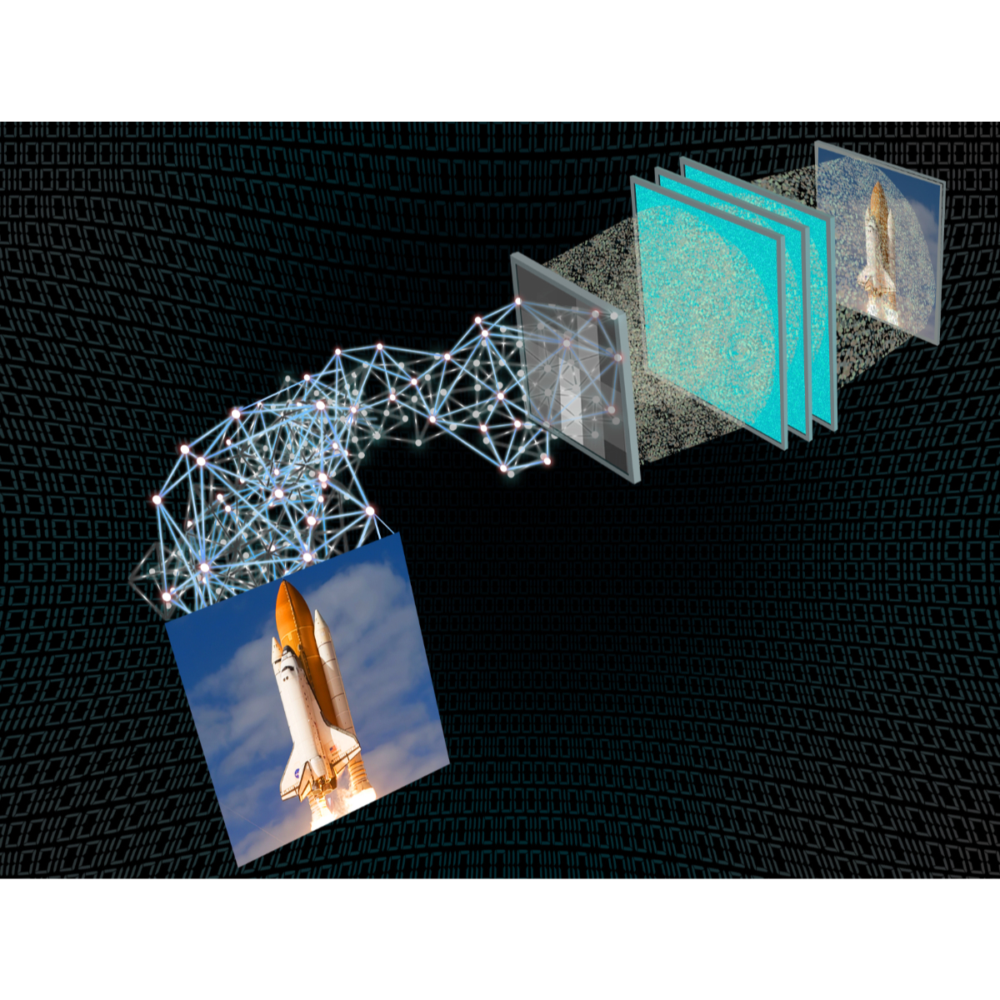

|
Cagatay Isil I am a Ph.D. candidate, supervised by Prof. Aydogan Ozcan in Electrical and Computer Engineering at UCLA. My current research focuses on computational imaging and displays using deep learning. I received my M.S. degree in Electrical and Electronics Engineering (EE) from Middle East Technical University (METU), where I have also completed my B.S. in both EE and Physics. |

|
ResearchI'm interested in computer vision, deep learning, generative AI, image processing, and computational imaging. Some papers are highlighted. |

|
Virtual Gram staining of label-free bacteria using dark-field microscopy and deep learning
Cagatay Isil, Hatice Ceylan Koydemir, Merve Eryilmaz, Kevin de Haan, Nir Pillar, Koray Mentesoglu, Aras Firat Unal, Yair Rivenson, Sukantha Chandrasekaran, Omai B. Garner, Aydogan Ozcan Science Advances, 2025 arXiv / code We introduce virtual Gram staining of label-free bacteria using a trained neural network (cGAN) that digitally transforms dark-field images of unstained bacteria into their Gram-stained equivalents matching bright-field image contrast. |
|
All-optical image denoising using a diffractive visual processor
Cagatay Isil, Tianyi Gan, Fazil Onuralp Ardic, Koray Mentesoglu, Jagrit Digani, Huseyin Karaca, Hanlong Chen, Jingxi Li, Deniz Mengu, Mona Jarrahi, Kaan Akşit, Aydogan Ozcan Light:science & applications, 2024 arXiv / One of the top downloaded papers of Light: Science & Applications in 2024 We report an analog diffractive image denoiser designed to all-optically process noisy phase or intensity images to filter out noise at the speed of light propagation through a thin diffractive visual processor – optimized using deep learning. |
|

|
Neural network-based processing and reconstruction of compromised biophotonic image data
Michael John Fanous, Paloma Casteleiro Costa, Cagatay Isil, Luzhe Huang, Aydogan Ozcan Light: Science & Applications, 2024 arXiv This survey explores how researchers intentionally degrade measurement aspects, such as point spread function (PSF) and signal-to-noise ratio (SNR), of biophotonic setups to then use deep neural networks to recover them. This process also serves to enhance other crucial parameters like field of view (FOV) and depth of field (DOF). |
|
Subwavelength imaging using a solid-immersion diffractive optical processor
Jingtian Hu, Kun Liao, Niyazi Ulas Dinç, Carlo Gigli, Bijie Bai, Tianyi Gan, Xurong Li, Hanlong Chen, Xilin Yang, Yuhang Li, Cagatay Isil, Md Sadman Sakib Rahman, Jingxi Li, Xiaoyong Hu, Mona Jarrahi, Demetri Psaltis, Aydogan Ozcan eLight, 2024 arXiv We demonstrate subwavelength imaging of phase and amplitude objects based on all-optical diffractive encoding and decoding. |
|
|  |
Super-resolution image display using diffractive decoders
Cagatay Isil, Deniz Mengu, Yifan Zhao, Anika Tabassum, Jingxi Li, Yi Luo, Mona Jarrahi, Aydogan Ozcan Science Advances, 2023 arXiv We report a deep learning–enabled diffractive display based on a jointly trained pair of an electronic encoder and a diffractive decoder to synthesize/project super-resolved images using low-resolution wavefront modulators. |
Miscellanea |
|
Feel free to steal this website's source code. Do not scrape the HTML from this page itself, as it includes analytics tags that you do not want on your own website — use the github code instead. Also, consider using Leonid Keselman's Jekyll fork of this page. |